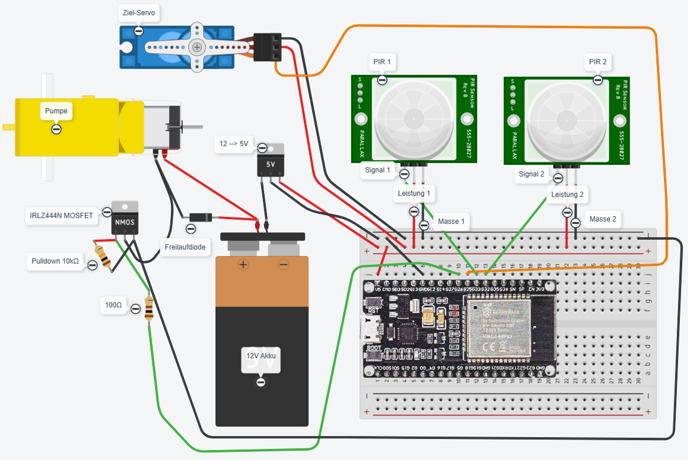

S.P.A.T.Z. – Aufbau- und Funktionsanleitung
Einführung
Dieses Dokument beschreibt den vollständigen Aufbau des S.P.A.T.Z.-Systems
(Sensor-Plattform zur Automatischen Tier-Zurückhaltung) in einer
anfängerfreundlichen, klar nachvollziehbaren Form. Alle Schritte sind so erklärt,
dass auch Einsteiger ohne Vorkenntnisse die Schaltung erfolgreich nachbauen können.
1. Übersicht des Systems
Das System besteht aus vier Hauptkomponenten:
- PIR-Sensoren zur Bewegungserkennung
- ESP32-Mikrocontroller zur Auswertung und Steuerung
- Servomotor zur Ausrichtung der Wasserdüse
- Pumpe + MOSFET zur Erzeugung des Wasserstrahls
Alle Komponenten werden über eine gemeinsame Stromversorgung betrieben, bestehend aus
einer 12-V-Quelle und einem Step-Down-Wandler, der daraus stabile 5 V erzeugt.
2. Tinkercad-Schaltplan

3. Schritt-für-Schritt Aufbau
3.1 Stromversorgung
Das System benötigt zwei Spannungen:
- 12 V für die Wasserpumpe
- 5 V für ESP32, PIR-Sensoren und Servomotor
Der Step-Down-Wandler wird wie folgt angeschlossen:
- VIN+ → 12-V-Plus
- VIN− → 12-V-Masse
- VOUT+ → 5-V-Versorgung für ESP32, PIRs, Servo
- VOUT− → gemeinsame Masse
Wichtig: Alle GND-Anschlüsse müssen miteinander verbunden sein.
3.2 PIR-Sensoren anschließen
Jeder PIR-Sensor besitzt drei Anschlüsse:
- Leistung (VCC) → 5 V
- Masse (GND) → GND
- Signal (OUT) → ein GPIO-Pin des ESP32
Beispiel:
- PIR 1 → GPIO 32
- PIR 2 → GPIO 33
3.3 Servomotor anschließen
- Rot (VCC) → 5 V
- Braun/Schwarz (GND) → GND
- Orange/Gelb (Signal) → z. B. GPIO 25
Der Servo richtet die Wasserdüse automatisch in Richtung der erkannten Bewegung aus.
3.4 Pumpe und MOSFET
Pumpe:
- + → direkt an 12 V
- − → an den Drain des MOSFET
MOSFET (z. B. IRLZ44N):
- Source → GND
- Drain → Pumpen-Minus
- Gate → ESP32 GPIO 26 (über 100 Ω)
Ein 10-kΩ-Pulldown-Widerstand zwischen Gate und GND verhindert,
dass die Pumpe unkontrolliert startet.
Eine Freilaufdiode (z. B. 1N4007) wird parallel zur Pumpe geschaltet:
- Anode → Pumpen-Minus
- Kathode → Pumpen-Plus
4. Funktionsablauf
- Ein PIR-Sensor erkennt Bewegung.
- Der ESP32 wertet das Signal aus.
- Der Servomotor richtet die Düse in die erkannte Richtung.
- Der MOSFET schaltet die Pumpe für einen kurzen Impuls ein.
- Das System kehrt in den Überwachungsmodus zurück.
5. Hinweise für Anfänger
- Verbinde immer zuerst die Masseleitungen.
- Prüfe die 5-V-Ausgangsspannung des Step-Down-Wandlers vor dem Anschließen des ESP32.
- Achte darauf, dass der MOSFET ein Logic-Level-Typ ist.
- Teste die Schaltung zuerst ohne Wasser.
Schaltplan herunterladen
📥 (.brd) Datei herunterladen